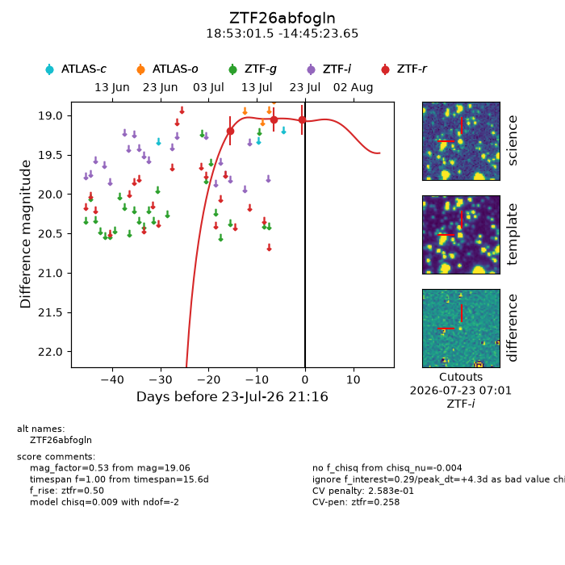
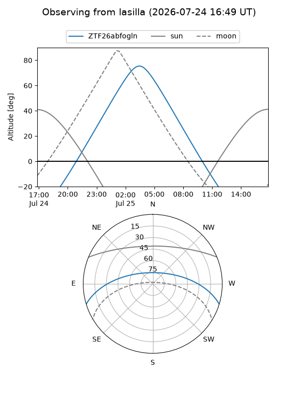
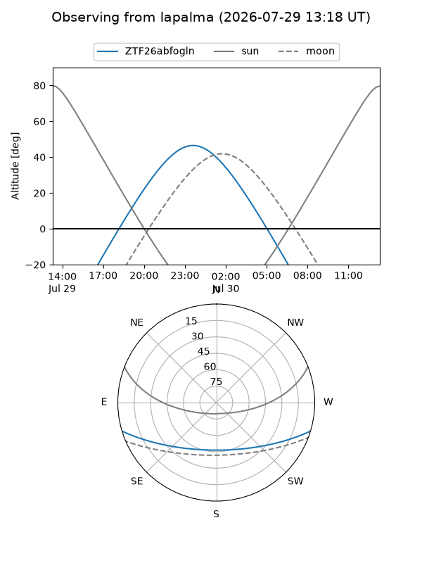
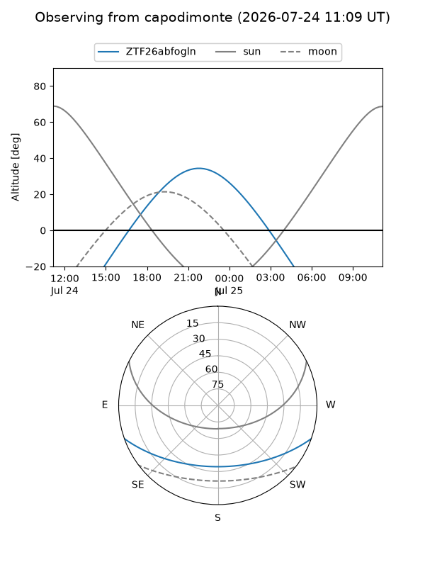
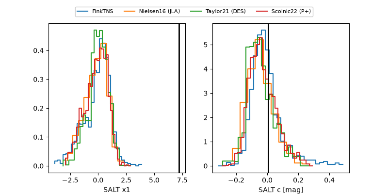

ZTF26abfogln
Target ZTF26abfogln at 2026-07-23 21:19
Aliases and brokers:
FINK-ZTF: ztf.fink-portal.org/ZTF26abfogln
Lasair-ZTF: lasair-ztf.lsst.ac.uk/objects/ZTF26abfogln
ALeRCE-ZTF: alerce.online/object/ZTF26abfogln
Direct TNS query: direct search
alt names
ZTF26abfogln (ztf,fink_ztf)
Coordinates:
equatorial (ra, dec) = 283.2564,-14.75657
equatorial (HMS+DMS) = 18:53:01.53,-14:45:23.65
galactic (l, b) = (19.9100,-7.01368)
Flags:
peak dt: +4.3
likely cv: !!
Photometry:
last ztfr=19.06
3 ztfr detections
Lightcurve

Visibility



Additional plots
